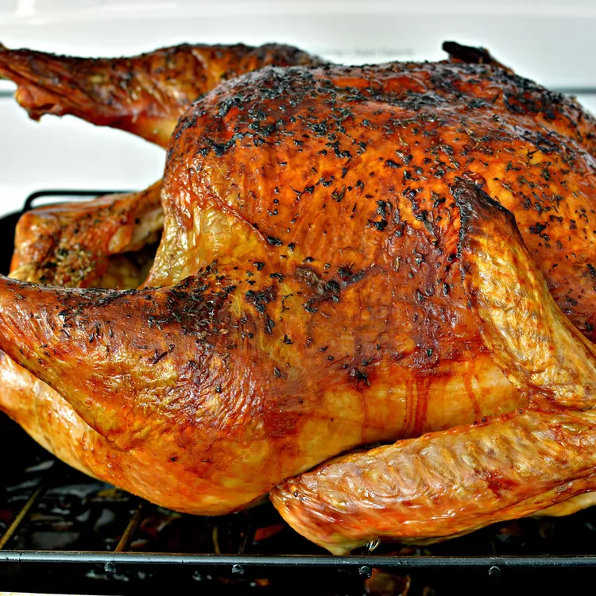

Homestyle Turkey, the Michigan Way

Description
A simple, down to basics recipe when it comes to the good old tom turkey.
Ingredients
- 1 (12 pound) whole turkey
- 6 tablespoons butter, divided
- 1 quart warm water
- 3 tablespoons chicken bouillon
- 2 tablespoons dried parsley
- 2 tablespoons dried minced onion
- 2 tablespoons seasoning salt
Directions
- Preheat oven to 350 degrees F (175 degrees C). Rinse and wash turkey. Discard the giblets, or add to pan if they are anyone's favorites.
- Place turkey in a Dutch oven or roasting pan. Separate the skin over the breast to make little pockets. Put 3 tablespoons of the butter on both sides between the skin and breast meat. This makes for very juicy breast meat.
- In a medium bowl, combine the water with the bouillon. Sprinkle in the parsley and minced onion. Pour over the top of the turkey. Sprinkle seasoning salt over the turkey.
- Cover with foil, and bake in the preheated oven 3 1/2 to 4 hours, until the internal temperature of the turkey reaches 180 degrees F (80 degrees C). For the last 45 minutes or so, remove the foil so the turkey will brown nicely.